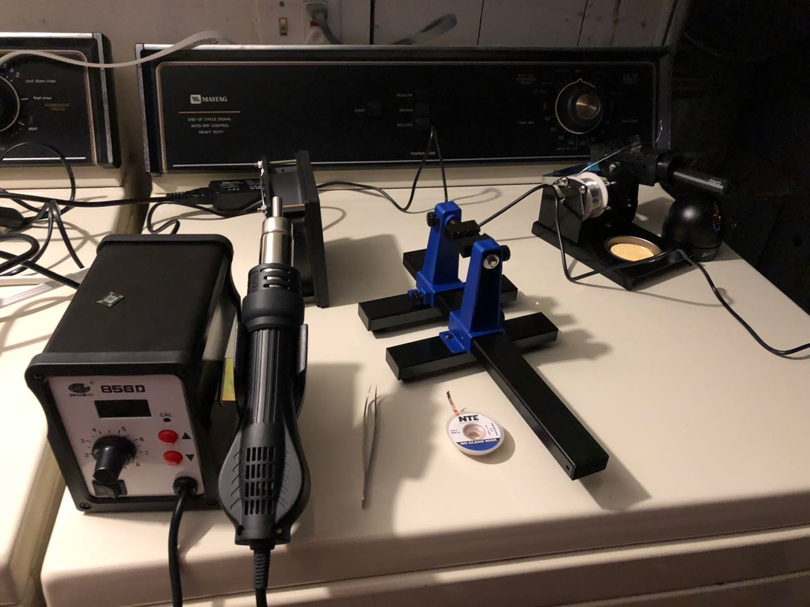
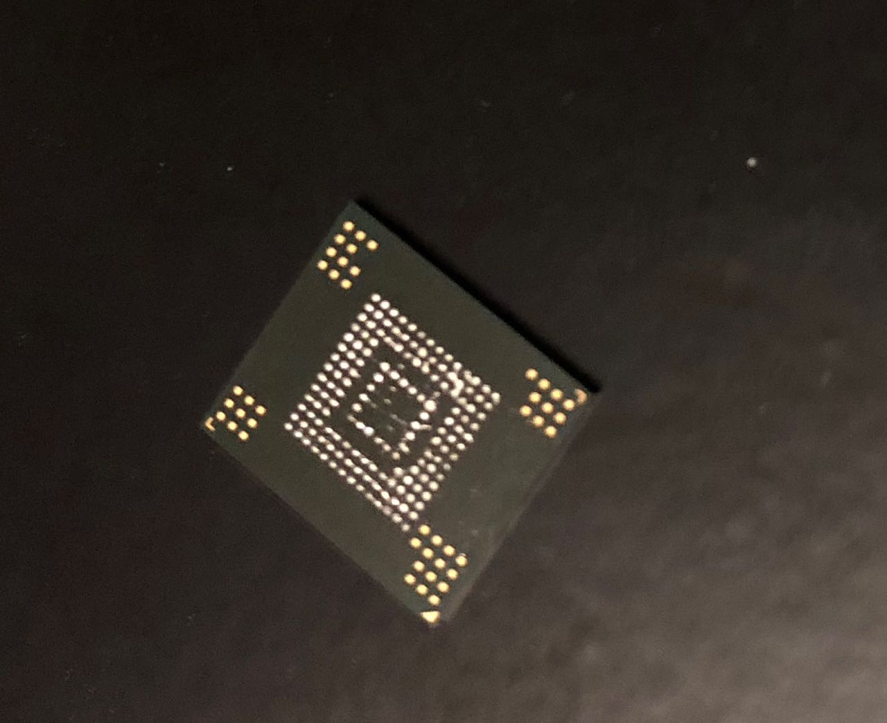
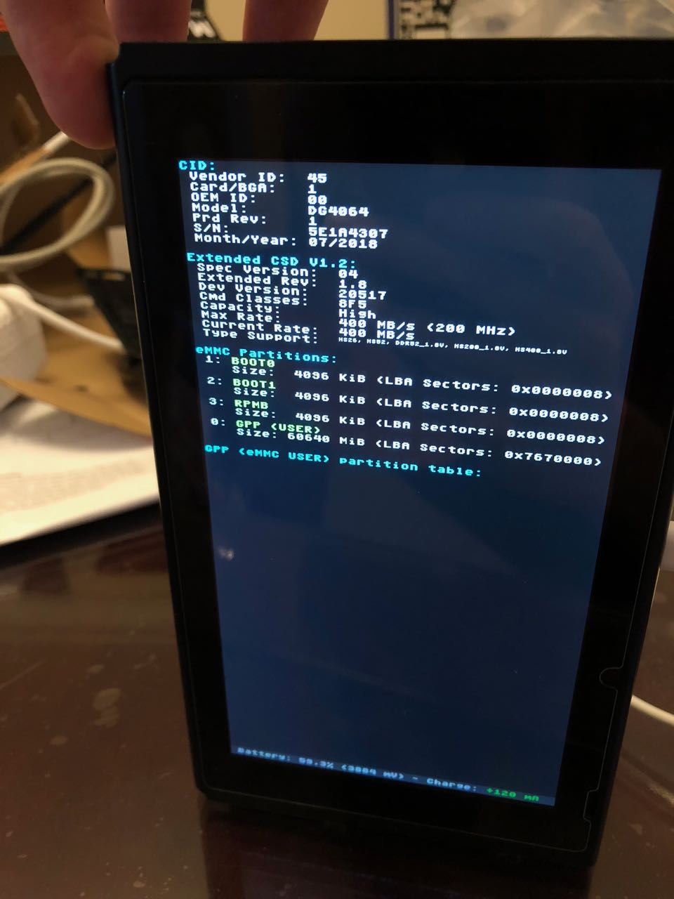
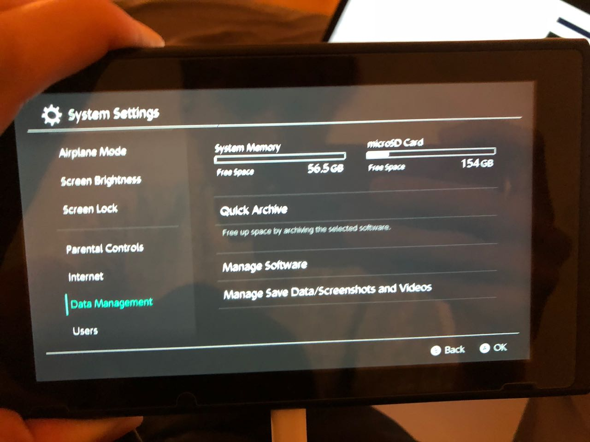

Exciting news: "bnstemp" has performed the first 128GB Switch NAND upgrade. They have also posted a guide in Chinese
Last month I went to Shenzhen and had my iPhone's NAND upgraded. Whenever I found out this was possible I was so amazed that it just works, given flashing some data on the new NAND chip. So I wanted to try this on another device I own. The Nintendo Switch uses eMMC for memory in a very standard package, so I gave giving it an upgrade a try.
I personally used a SDINBDG4-64G-XI1 because I could find it on Arrow with free overnight shipping. However I'd reccomend trying to buy a 128GB chip from Taobao, especially if you live in China as it's much cheaper. For example you can get a KLMDGAGEAC-B001 for only ~20 USD. I have also seen a 256GB eMMC by Samsung KLMEG8UCTA-B041, but haven't found a way to purchase it. If somebody finds a way to source 256GB eMMCs, please let me know.
An amazing tool by CTCaer that's needed to backup your original NAND. You need to remove a check to restore a backup onto a larger nand. I did this on my fork, you can download a binary here.
My SDINBDG4-64G-XI1 came with solder balls already on it and first install attempt was successful, but you may need a stencil to retry if things don't go quite right.
First you need to boot into Hekate using your preferred method and backup your BOOT0, BOOT1, and make a full backup. This is critical.
Then dissassemble your switch and remove the eMMC board that looks like this.

Then use hot air rework station to remove the original NAND chip and
clean off the pads on the motherboard.

Old NAND chip after being removed.
Then put on your replacement NAND chip. For me this was as easy as putting
down some flux, lining the new chip up and applying hot air as the replacement
chip came with solder balls pre installed. At this point you should use Hekate
console info to verify your switch is seeing the new eMMC correctly.

Then you can use modified Hekate to restore BOOT0, BOOT1, and the full backup. At this point your switch should boot up like normal again. It's very possible that Nintendo phones home with information about the NAND and your console could be banned. However, this has not happened to me yet
In order to get the switch to see the full size of the new NAND, you have to resize the USER partition. Since the Switch uses encryption on this parition it's a little tricky, but with the great tools by the community, it's possible. The method I used is using memloader to expose the eMMC to a computer. First use biskeydump to dump all your bis keys. Then use HacDiskMount and mount the USER partition with bis key 3 and make a backup of everything on it.
Then use linux tools to recreate the USER partition larger. When you open gparted with the eMMC exposed via memloader, it prompts you to repair the GPT since it's too small for the device, do this. Then use gdisk to delete and recreate the USER partition, making sure to set maintain the GUID of the partition. This is important because otherwise the switch will not boot after. It's likely it uses the GUID to mount the USER partition. I also reset the partition type back to 0xFFFF with parted after this.
Then go back to a Windows computer and again expose the eMMC with memloader.
Use HacDiskMount, ignore the warning about not being a full NAND dump,
and mount the USER partition using the same BIS keys as before. Then
format the mounted drive using guiformat.
Then copy all the files you backed up from the original partition and
your switch should be ready to boot with the new expanded memory.
